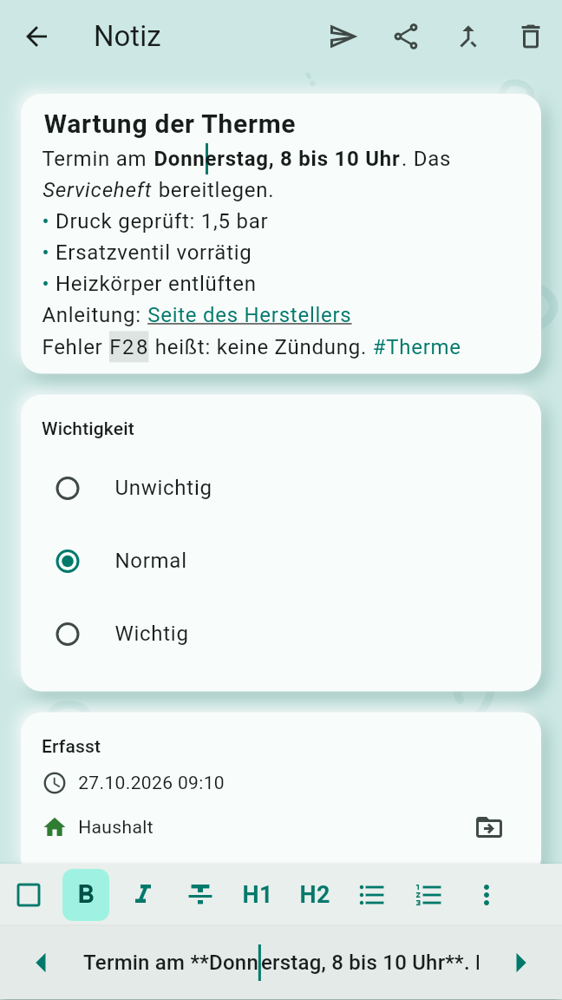
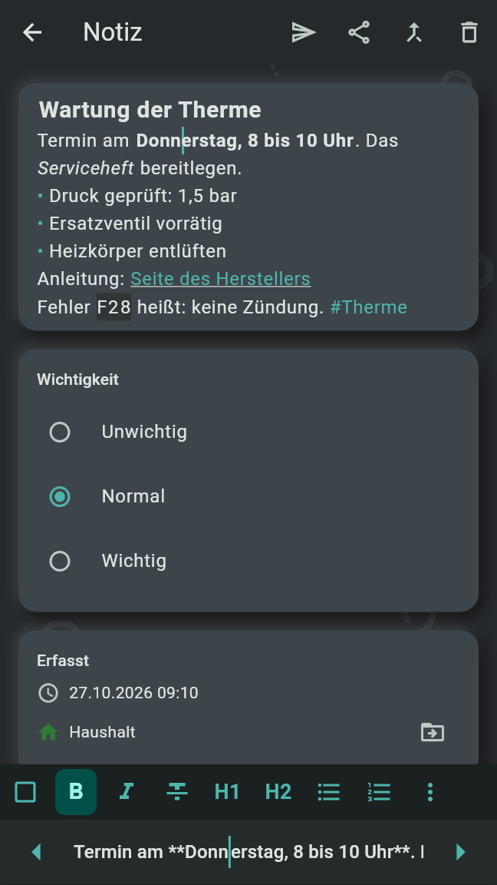
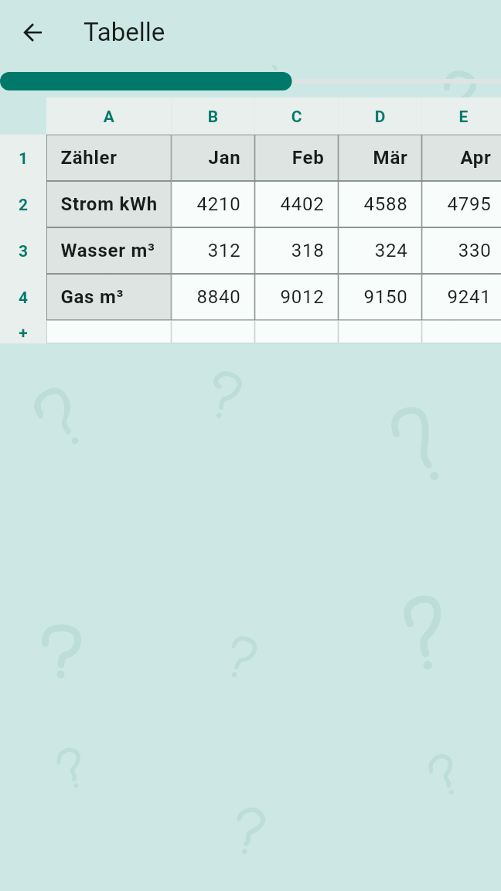
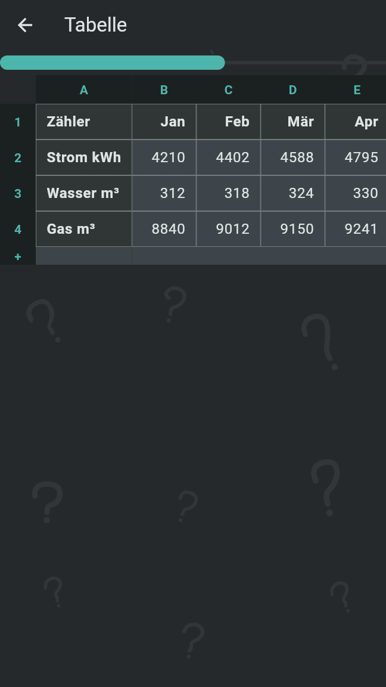

Der Text einer Notiz kann formatiert sein und Statuskästchen, #Wörter und Tabellen enthalten. Sprachaufnahmen bekommen ein Transkript und Fotos einen Fototext, beides auf dem Gerät erzeugt; die Suche findet Notizen an all dem.
Der Text einer Notiz und eines Abschnitts kann fett, kursiv oder durchgestrichen sein, zwei Überschriftenebenen haben, Aufzählungen und nummerierte Listen mit einer Einrückungsebene, Zitate, Links, Code im Text und Tabellen. Er wird als Markdown gespeichert, genau so, wie er geschrieben ist. Ein Text bleibt unformatiert, bis er zum ersten Mal formatiert wird, und bleibt von da an formatiert: durch eine Taste der Formatleiste, durch ein als Markdown getipptes Format oder durch Einfügen eines Texts, der eines verwendet. Karten, Abschnitte, gesendete Notizen und Sicherungen zeigen ihn formatiert. Ein Gerät mit Old Brain Fix 0.1 zeigt das Markdown und kann es nicht ändern.
Auf dem Handy sitzt die Formatleiste auf der Tastatur, solange der Notiz-Editor oder Zur Notiz hinzufügen sie geöffnet hat. Ihre Tasten, in dieser Reihenfolge:
Die Tasten, die keinen Platz finden, kommen in das ⋮ am Ende der Leiste, Weitere Formate, das sich am Finger öffnet. Fett, kursiv, durchgestrichen und Code wirken auf die Auswahl oder, wenn nichts ausgewählt ist, auf das Wort am Cursor; die Zeilenformate wirken auf jede Zeile, die die Auswahl berührt. Eine Taste ist hervorgehoben, solange der Cursor in ihrem Format steht, und ein zweites Tippen nimmt das Format wieder weg.
Mit In zwei Zeilen schreiben, in den Einstellungen unter „Schreiben“ und voreingestellt, zeigt die obere Zeile den Text formatiert, ohne seine Markdown-Zeichen, und die Zeile über der Tastatur das Markdown der Zeile mit dem Cursor, mit ◀ und ▶, um den Cursor zu bewegen. Ist es aus, zeigt das Feld die Zeichen gedämpft.


Ein als Markdown getipptes Format wirkt schon beim Tippen:
# für eine große Überschrift, ## für eine kleine, -, * oder + für einen Aufzählungspunkt, 1. für einen nummerierten Punkt und > für ein Zitat.**fett**, *kursiv* oder _kursiv_, ~~durchgestrichen~~, `Code` und [Text](Adresse).
Jeder Zeilenumbruch bleibt einer, sodass untereinander getippte Zeilen getrennt bleiben. Ein
Punkt, der um zwei Leerzeichen oder mehr eingerückt ist, steht eine Ebene weiter innen; tiefere
Punkte erscheinen eine Ebene weiter innen. Aufeinanderfolgende nummerierte Punkte zählen weiter,
sodass 1. auf jeder Zeile 1, 2, 3 zeigt. Tiefere Überschriften (###),
Codeblöcke, Bilder und anderes Markdown erscheinen so, wie sie geschrieben sind.
Ein Erfassungsbildschirm hat keine Formatleiste, aber ein Text, der mit Markdown getippt oder eingefügt wird, wird als formatierter Text gespeichert.
Link fragt nach der „Web- oder E-Mail-Adresse“, eine vorhandene schon eingetragen; Link setzen legt sie auf die Auswahl oder das Wort am Cursor. Leer gelassen, entfernt sie den Link. Eine Adresse ohne „https://“ gilt als Webadresse, oder als E-Mail-Adresse, wenn sie ein „@“ enthält. Ein Tippen auf einen Link auf einer Karte öffnet ihn im Browser oder in der Mail-App. Nur Web- und E-Mail-Adressen öffnen sich; jeder andere Link, der auch von einer anderen Person in einem geteilten Bereich kommen kann, bleibt Text.
Im Text erscheint eine Tabelle als Raster, auf die Breite verkleinert, ihre Kopfzeile fett. Ein Tippen darauf öffnet sie im Vollbild. Tabelle in der Formatleiste öffnet die Tabelle, in der der Cursor steht; anderswo setzt sie eine neue Tabelle an den Cursor, zwei leere Spalten mit einer Kopfzeile und einer weiteren Zeile, auf eigenen Zeilen, und öffnet sie mit ihrer ersten Zelle in Bearbeitung.
Tabellen werden als GFM-Tabellen geschrieben: Jede Änderung schreibt die ganze Tabelle neu, jede
Zeile als | a | b |, und lässt die Wörter in ihren Zellen, wie sie waren. Eine Zeile,
die direkt unter einer Tabelle getippt wird, ohne Leerzeile dazwischen, wird eine Zeile von ihr.
Eingefügte Markdown-Tabellen werden zu Tabellen. Wo du die Notiz nur lesen darfst, öffnet sich die
Tabelle zum Lesen.


Ein ☐, ✅ oder ❌ irgendwo im Text einer Notiz oder eines Abschnitts ist ein Statuskästchen: offen, abgehakt oder gescheitert, etwa „✅ v2 beim Kunden unterstützt“. Es wird beim Speichern des Textes zu einem Statuskästchen, und das Zeichen, mit dem es geschrieben wurde, ist der Zustand, mit dem es beginnt. Ein Tippen darauf öffnet am Finger ein Menü mit Abhaken, Als gescheitert markieren und Wieder öffnen, ohne den aktuellen Zustand. Die Wahl wird neben dem Text gespeichert, mit Person und Zeitpunkt, und auf jedes Gerät synchronisiert; der Text selbst bleibt, wie er ist.
Ein Wort mit „#“ davor, etwa „#Garten“, ist hervorgehoben, auf Karten, in Abschnitten und im Editor. Ein Tippen darauf auf einer Karte, in einem Abschnitt oder in einer Tabelle öffnet die Suche in allen Notizen nach dem Wort, so wie es geschrieben ist. Für ein #Wort wird nichts gespeichert, und es gibt keine Liste davon; es ist ein Wort des Texts.
Eine Sprachaufnahme bekommt ein Transkript: die darin erkannten Wörter, neben der Aufnahme aufbewahrt. Whisper schreibt es auf dem Gerät, auf Deutsch oder Englisch, je nachdem, wonach die Aufnahme eher klingt, im Hintergrund und eine Aufnahme nach der anderen, sobald die Notiz gespeichert ist; Aufnahmen, die vor dem Sprachmodell erfasst wurden, folgen. Solange es läuft, steht „Wird transkribiert …“ unter der Aufnahme; eine Aufnahme ohne Sprache zeigt „Keine Worte erkannt.“. Die Aufnahme bleibt immer erhalten.
Whisper bekommt die Namen deiner Bereiche und Themen vorgegeben, bei deutscher Sprache auch die englischen Wörter, die im Deutschen üblich sind, und die Wörter der App wie Unsortiert, Routine und Agenda, damit sie so geschrieben werden, wie man sie schreibt. Wo Whisper diese Vorgabe nur wiederholt, wird die Wiederholung aus dem Transkript genommen.
Transkripte brauchen ein Sprachmodell, das einmal heruntergeladen wird. Das Handy bietet es nach dem ersten Start an (siehe Erste Schritte); Einstellungen, Sprachmodell bietet es auf dem Handy und dem Desktop jederzeit an. Unter „Modell“:
Ein Modell zu wählen, lädt es herunter, mit Fortschritt und Abbrechen. Nur das gewählte Modell wird behalten: Das vorige wird gelöscht, sobald das neue bereit ist. Jeder Download kommt nur aus der eigenen Veröffentlichung von Old Brain Fix auf GitHub und wird vor der Verwendung gegen eine feste Prüfsumme geprüft; ein abgebrochener oder nicht passender Download behält nichts und sagt das. Eigene Datei verwenden nimmt die mehrsprachige ggml-base.bin oder ggml-small.bin von whisper.cpp vom Gerät; jede andere Datei wird abgelehnt.
Ein Foto oder Bild bekommt einen Fototext: den darin erkannten Text, neben dem Foto aufbewahrt. RustO liest ihn auf dem Gerät mit den Modellen PP-OCRv6 Tiny von PaddleOCR, die Teil der App sind, sodass nichts heruntergeladen wird und nichts das Gerät verlässt. Es liest deutsche Buchstaben (ä, ö, ü, ß) und € und behält die Zeilen so, wie sie auf dem Foto liegen, sodass ein Preis auf der Zeile seines Artikels bleibt. Bei einer stark gewölbten Seite können Zeilen fehlen. Fotos werden im Hintergrund gelesen, eins nach dem anderen, sobald die Notiz gespeichert ist; das Erfassen wartet nie darauf.
Auf einer vollen Karte stehen Transkripte und Fototexte gedämpft unter dem Wort „Transkript“ oder „Fototext“; eine kompakte Karte zeigt ihre ersten drei Zeilen.
Ein Transkript oder Fototext wird nur von der App geschrieben; er lässt sich nicht bearbeiten. Im Notiz-Editor steht unter jedem Transkript und Fototext, auch denen eines Abschnitts einer zusammengeführten Notiz:
Aufnahme entfernen, Text behalten und Foto entfernen, Text behalten, im Editor und im ⋮ der Karte, tun das Umgekehrte für eine Aufnahme oder ein Foto mit Text: Die Datei verschwindet von all deinen Geräten und bei allen, mit denen du den Bereich der Notiz teilst, und der Text bleibt in der Notiz. In einem geteilten Bereich tut ein Mitglied all das nur bei seinen eigenen Notizen.
Der Notizbrowser hat auf jeder Ebene ein Suchfeld: „Alle Notizen durchsuchen“ in der Liste der Bereiche, „Diesen Bereich durchsuchen“ und „Dieses Thema durchsuchen“ darunter. Die Suche findet, was getippt wird, in beliebiger Groß- und Kleinschreibung, im Text einer Notiz und ihrer Abschnitte, in ihren Transkripten und Fototexten, in den Textzeilen der Einträge ihrer Strichliste und in den Zeilen ihrer Checkliste oder Einkaufsliste. Ein formatierter Text wird so durchsucht, wie er sich liest: „fett“ findet „**fett**“, und die Markdown-Zeichen werden nirgends gefunden. Ein entferntes Transkript oder ein entfernter Fototext wird nicht mehr gefunden.